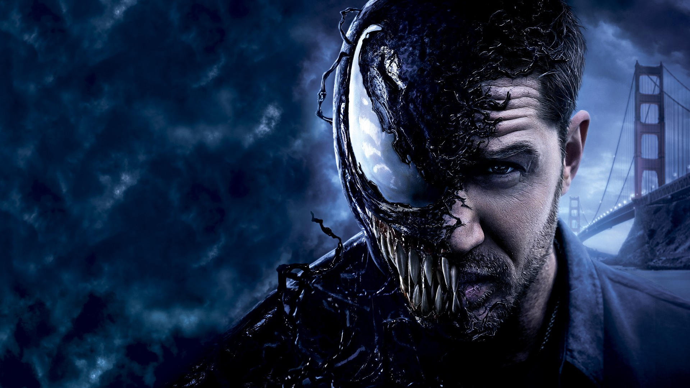

Venom
Já se forma um consenso na crítica nerd que Venom é um filme que soa anacrônico, pré-Marvel Studios, como se tivesse sido feito no começo dos anos 2000, porque não teria o acabamento que se espera hoje de blockbusters baseados em HQs. A associação com a Marvel é óbvia não só pela hegemonia do estúdio no mercado mas também porque o vilão do Homem-Aranha faz parte desse universo nos quadrinhos. Na minha opinião, porém, essa impressão deriva, antes, do fato de Venom ser visivelmente um produto precário, feito com cartilha de roteiro e CGI de ocasião, e não por uma suposta fatalidade de timing. No mais, esse é um consenso bem condescendente. Afinal, a própria Marvel comete seus enganos, e eventualmente aprende com eles. No caso de Venom, o projeto todo parece ter a mediocridade como régua, e inclusive é uma régua que segue valendo em Hollywood em 2018 de forma geral: a adaptação segue o cânone do personagem mais a título de fan service do que de autenticidade (a citação ao Globo Diário, principalmente, é jogada e não serve para dar uma substância maior ao jornalista) e todo o desenrolar da trama acontece aos trancos com cenas expositivas. A opção pela ação noturna para mascarar a computação gráfica já não é tão frequente nos filmes do gênero hoje mas também continua sendo uma constante do mercado.
Nos quadrinhos, Venom e Eddie Brock nunca foram um primor de dinâmica shakespeareana, e para funcionar o filme precisaria acertar, primeiro, essa relação entre os dois personagens, já que o triângulo formado com o Homem-Aranha está fora de questão. Tom Hardy oferece uma interpretação marrenta-introvertida que flerta com a pantomima a partir do momento em que começa a simbiose, mas o diretor Ruben Fleischer dilui essa ideia no meio de outras (a simbiose tem um caráter de possessão de filme de horror nos primeiros hospedeiros, depois de pulsão e prazer quando o filme nos habitua com a ideia da simbiose). No filme, essas mudanças de chave não acontecem exatamente como uma progressão e soam mais como casuísmo.